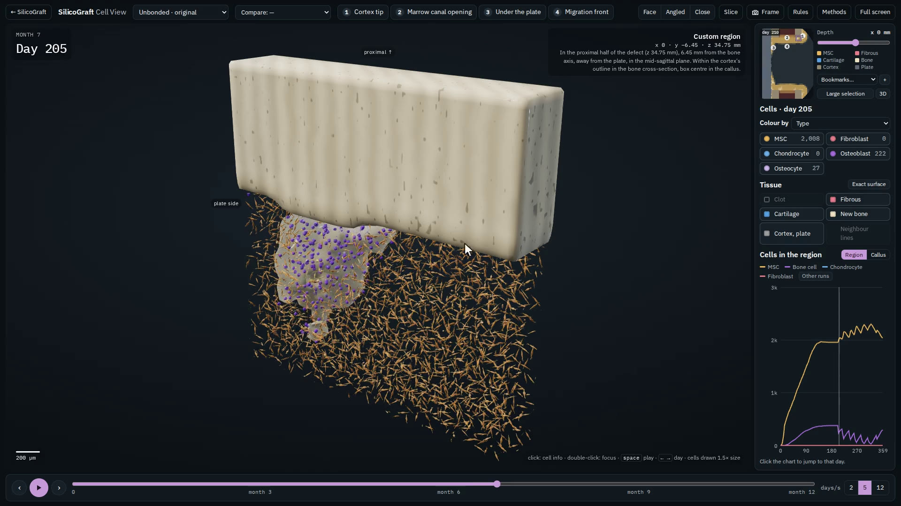
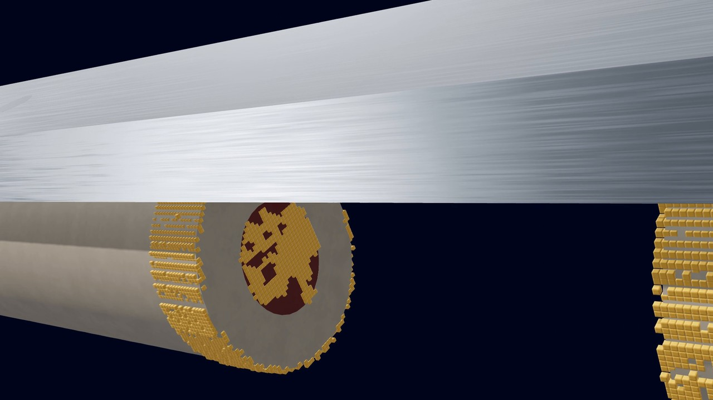
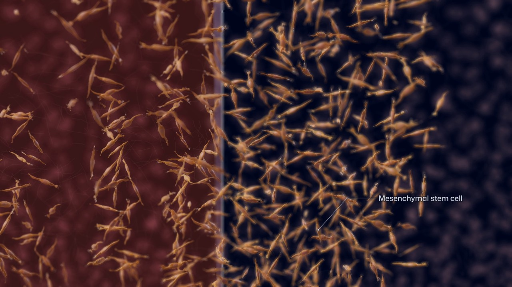
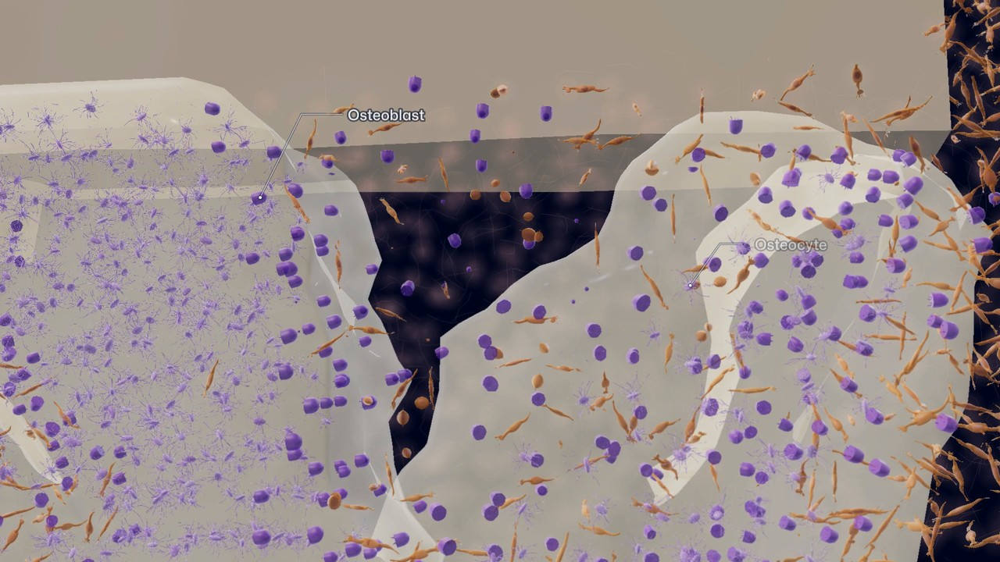
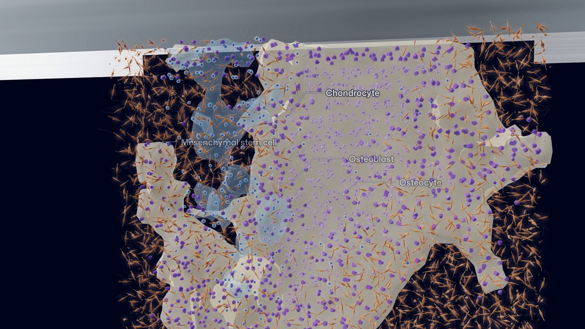
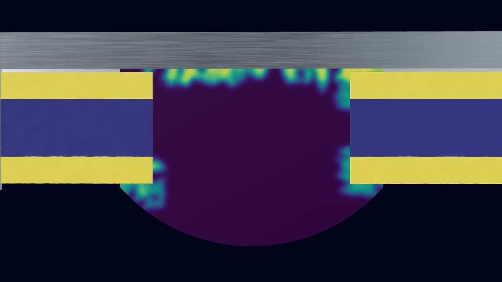
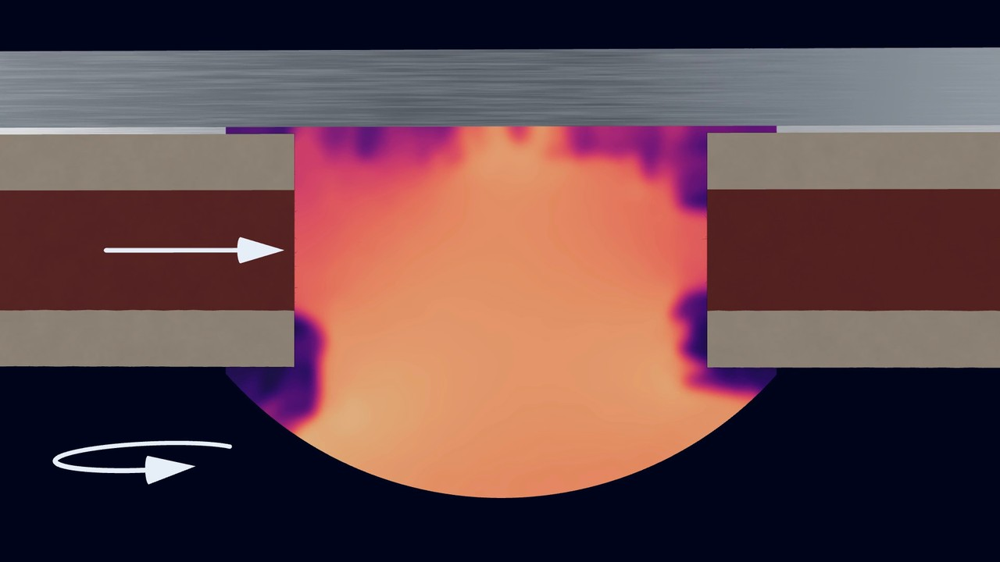
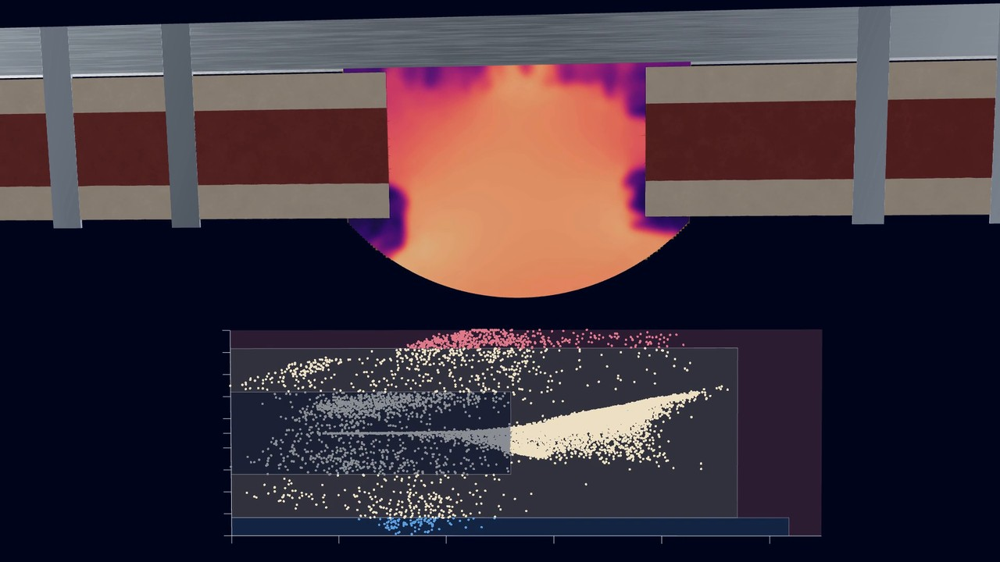
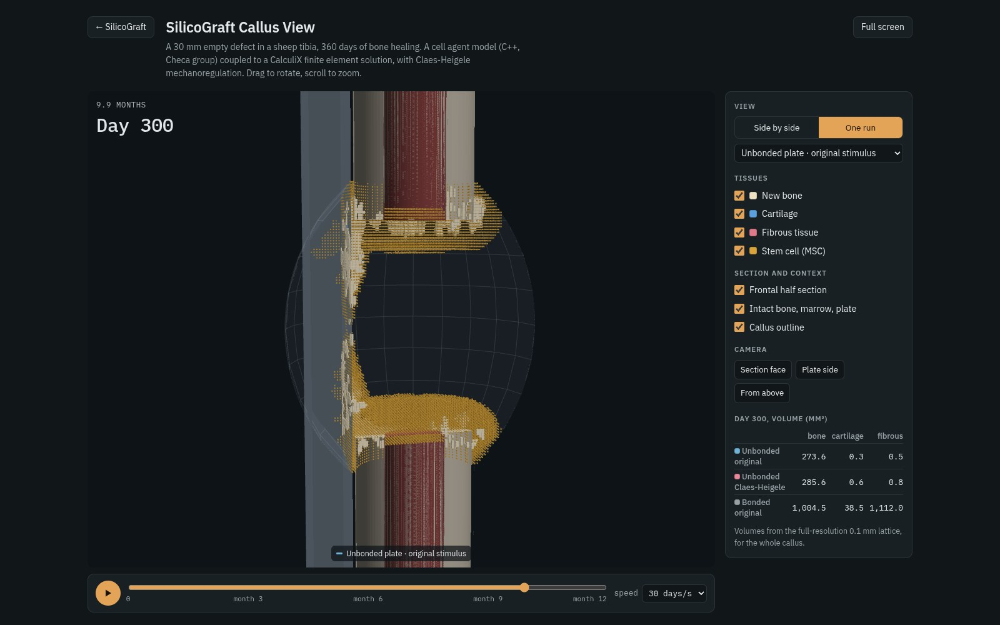
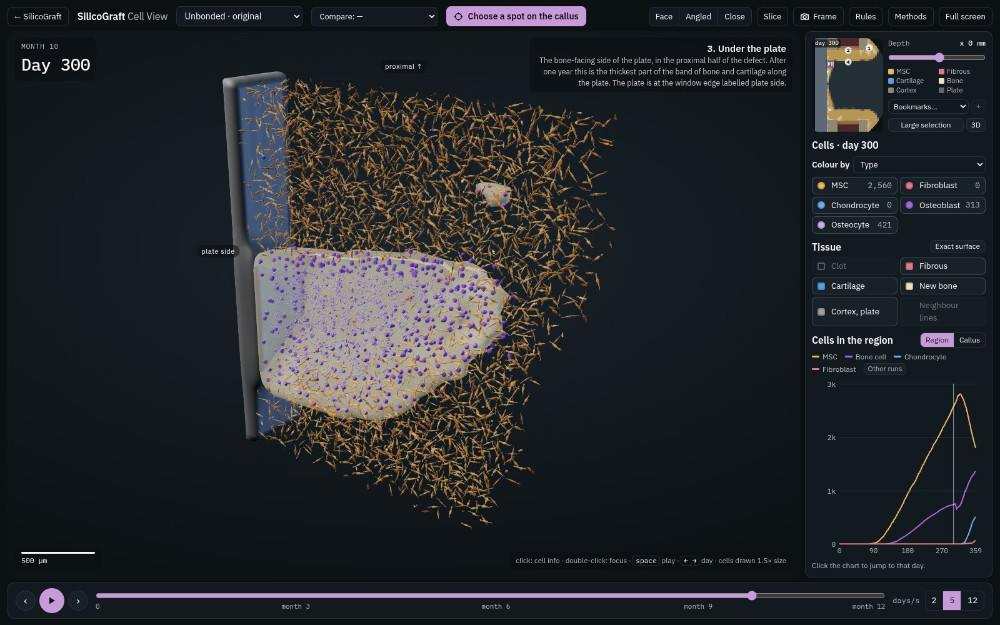

Bone grafts, healed in silico first.
Cells, tissue and strain, simulated over 360 days with open tools.
Cells, tissue, strain, and back.
Every three days the mechanics decide what the stem cells become.
-
Day 0
A gap in the tibia
Thirty millimetres of a sheep tibia are gone. A steel plate bridges the gap while the leg carries 823 N and a bending load.

-
Days 0 to 30
Stem cells move in
Stem cells leave the marrow for the clot in the gap, 0.1 mm at a time. Until day 30 they are the only cells here.

-
Days 30 to 220
Each cell lays down tissue
Osteoblasts make bone, chondrocytes cartilage, fibroblasts fibrous tissue.

-
Days 220 to 357
Bone and cartilage along the plate
Under the plate the new bone thickens, from 404 to 1,346 bone cells in this slice. Near day 325 cartilage forms beside it.

-
Days 6 to 357
Tissue sets the stiffness
Each element mixes its tissues over the last ten days, from 0.2 MPa for granulation to 17,000 MPa for bone.

-
Day 357
CalculiX loads the leg
Every three days a finite-element solve turns that stiffness into strain and pressure across the callus.

-
Day 357
Strain picks the next cell
Each callus element lands on a plane of strain and pressure. Low values make bone, higher ones cartilage or fibrous tissue. Then the loop starts again.

- Perier-Metz C et al. Acta Biomaterialia 2022;145:329-341. doi.org/10.1016/j.actbio.2022.04.008
- Perier-Metz C, Duda GN, Checa S. Front Bioeng Biotechnol 2020;8:585799. doi.org/10.3389/fbioe.2020.585799
- Claes LE, Heigele CA. J Biomech 1999;32(3):255-266. doi.org/10.1016/S0021-9290(98)00153-5
- Dhondt G. The finite element method for three-dimensional thermomechanical applications. Wiley 2004. doi.org/10.1002/0470021217
Open a run in 3D.


Want a different load, defect or graft? Ask for a run.
Request a runDoes it heal like the real sheep?
We reran Perier-Metz 2022: an empty 30 mm gap in a sheep tibia under a plate.
-
Yes
Bone bridges along the plate
By day 359 bone lines the plate in 98% of slices, like their model (month 12) and the sheep (month 3). The gap stays open.
-
Less
Bone after three months
mm³ at 3 months. Line: sheep range. The model makes bone more slowly at first.
-
Yes
Same result on repeat runs
Three runs, different random starts: 1% apart at day 90, 10% at day 359.
Means of three runs. Claes-Heigele sign: 109 ± 5 and 445 ± 12 mm³. Sheep and their model: Perier-Metz 2022, Fig. 4a.
β-TCP in the jumping gap.
Coming next, an implant in a fresh socket with granules in the gap.
Calibrate on dog sockets
Fit resorption and new bone to socket histology.
Validate on dog implants
Predict bone contact at 12 weeks, with and without PDGF.
Predict in patients
Compare buccal bone over 18 months with serial CBCT.
Ask for a run.
It’s free.

Melih Marangoz
I am a biomedical engineering student at İzmir Katip Çelebi University in İzmir, Türkiye. I build computer models of bone healing and work on dental graft materials.
SilicoGraft began as my one-person course project, a port of an Abaqus model to open tools.